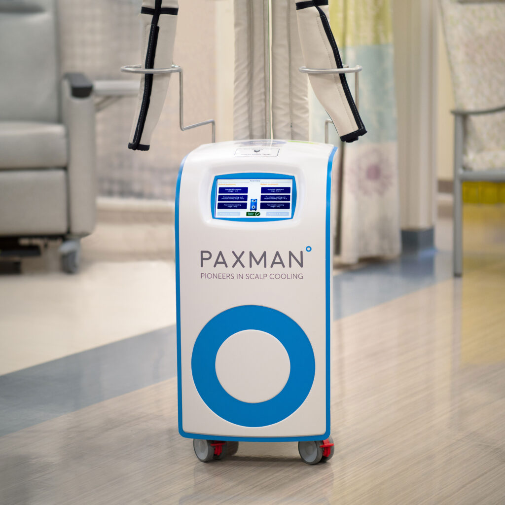

0381 426-9113
Lun, Mar y Jue: 8hs a 20hs - Mie y Vie: 8hs a 13hs

Preserva tu cabello durante la quimioterapia
Enfriador Capilar Paxman:
El enfriamiento del cuero cabelludo es muy eficaz en la prevención y minimización de la pérdida de cabello, en una amplia gama de regímenes de quimioterapia.
Es un método para preservar el cabello durante los tratamientos de quimioterapia.
¿Cómo me ayuda?
Al disminuir la temperatura del cuero cabelludo se reduce la irrigación sanguínea al cabello.
Preserva tu cabello
Mejora tu estado de ánimo
Aumenta tu autoestima
Información Adicional
Utilizando el sistema PAXMAN durante la quimioterapia, se logra preservar el cabello del paciente, con una eficacia del 85% en promedio.
A los beneficios del procedimiento, se le suma la mejora en el estado de ánimo, y su autoestima.
En la lucha contra el cancer, una autoestima sana y actitud positiva, son factores importantes para vencerlo. Por eso confiamos en que PAXMAN es una gran herramienta para combatirlo.

¿Preguntas frecuentes?
Nuestro objetivo es garantizar que todos, tengan la oportunidad de conservar su cabello durante la quimioterapia.
La quimioterapia funciona centrándose en todas las células que se dividen rápidamente
en el cuerpo. El cabello es la segunda célula en división más rápida en el cuerpo y ésta es
la razón por la cual muchos medicamentos de quimioterapia causan la pérdida de cabello.
Los folículos pilosos en la fase de crecimiento son atacados, lo que resulta en la pérdida de cabello aproximadamente 2 semanas después del comienzo de la quimioterapia.
Los folículos pilosos en la fase de crecimiento son atacados, lo que resulta en la pérdida de cabello aproximadamente 2 semanas después del comienzo de la quimioterapia.
El daño que la quimioterapia causa en el folículo piloso puede minimizarse al disminuir la
temperatura del cuero cabelludo unos pocos grados. Esto a su vez reduce el flujo de
sangre a los folículos capilares minimizando la pérdida de cabello. El sistema de
enfriamiento PAXMAN ofrece una opción cómoda y tolerable debido a su excelente
tecnología de extracción de calor.
El uso de enfriamiento del cuero cabelludo o "gorros fríos" ha demostrado ser una forma
efectiva de minimizar la pérdida de cabello inducida por la quimioterapia y puede dar
como resultado un alto nivel de retención o preservar por completo el cabello.
El enfriamiento exitoso del cuero cabelludo depende de muchos factores tales como tipo y etapa del cáncer, edad, tipo de cabello, condición y cuidado del cabello, stress, estado de ánimo y salud general.
Es importante entender que la pérdida de cabello varía de una persona a otra y la retención de todo el cabello no puede garantizarse.
Si se pierde algo de cabello, lo alentamos a continuar con el proceso, muchos pacientes informan el crecimiento del cabello durante su tratamiento de quimioterapia mientras se utiliza el enfriamiento del cuero cabelludo.
El enfriamiento exitoso del cuero cabelludo depende de muchos factores tales como tipo y etapa del cáncer, edad, tipo de cabello, condición y cuidado del cabello, stress, estado de ánimo y salud general.
Es importante entender que la pérdida de cabello varía de una persona a otra y la retención de todo el cabello no puede garantizarse.
Si se pierde algo de cabello, lo alentamos a continuar con el proceso, muchos pacientes informan el crecimiento del cabello durante su tratamiento de quimioterapia mientras se utiliza el enfriamiento del cuero cabelludo.
Consta de un enfriamiento previo de 30 minutos, durante toda la infusión y hasta 90
minutos después de haber terminado el fármaco. Dependiendo de su tratamiento, el
tiempo puede ser menor a 90 minutos después.
La tolerancia experimentada a la sensación fría, durante el tratamiento de enfriamiento del
cuero cabelludo, varía ampliamente de un paciente a otro. Es muy importante recordar
que la sensación de incomodidad o dolor que se siente en los primeros 10-15 minutos, es
transitoria y tiende a desaparecer a medida que se aclimata al frio.